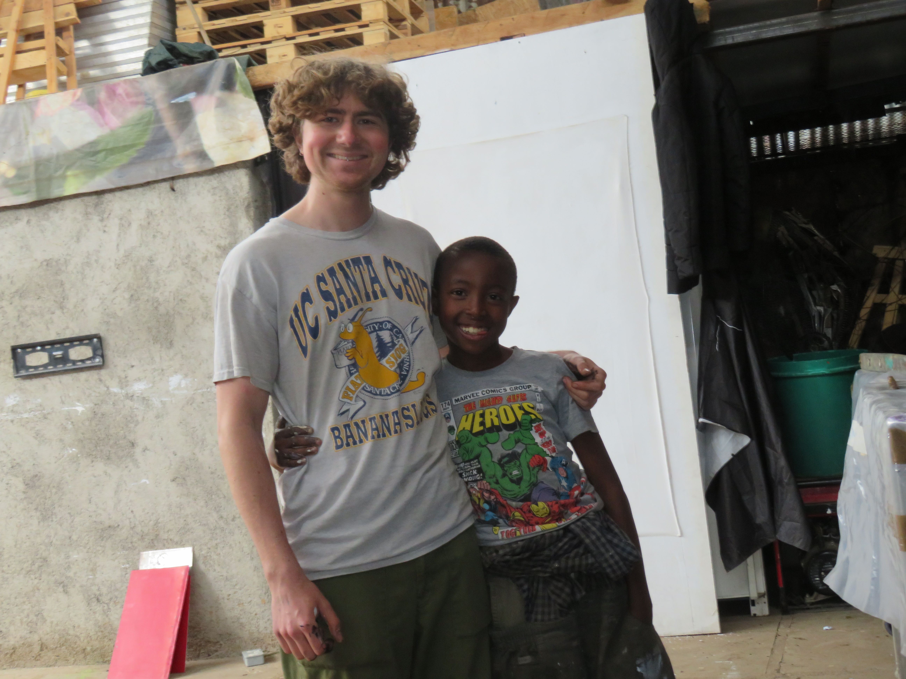

Back in April I spent a few weeks in Kenya’s capital with the Wajukuu Arts Collective. A few kids from the collective He… I was hosted by Shabu Mwangi, an artist and one of the group’s founders, in order to see their work and way of life. I am honored to have been invited into his family and see the positivity brought to their community. The collective is now made up of a few original artists and many younger adults who grew up in the group’s kids club. Every weekend they host 50-60 local children, teaching them how to draw, paint, sculpt, dance, and play the drums. On one of these weekends, a member, Lazarus Tumbuti and I pulled 14 of the more proficient painters aside. Their mission: to paint scenes and stories from their community atop the red bus panels I brought under my arm. The kids were talented, hilarious, and intently focused on their mission. Over the course of those two days I saw images develop of a neighborhood through young eyes. They painted a neighborhood paved with plastic refuse, with houses made of scrap metal, and a river dyed red with the chemicals of its nearby industrial estate. While they painted the problems, they too painted the poetry. They painted the multi-coloured facades of home businesses, wispy clouds, and peers playing with their expanse. One painting captures the ritual of collecting water. It shows a line of women congregating over their collection of yellow jugs, waiting to fill them at one of the few local water sources. Over my trip, the bright yellow cooking oil containers became a repetative symbol of Kenyan hardship, and this kid’s conscious imagery was humbling. The Wajukuu Arts project has become the soul of the Makuru Lunga Lunga informal neighborhood in Nairobi, bringing creativity to a community that might not otherwise get to enjoy the luxury of the arts. The neighborhood is considered a “slum,” in which housing is crudely erected and the ground is made of mud and refuse. When they arent experiencing one of their frequent power outages, the place is alive with the sound of Afrobeats and 100 televisions through unisulated steel walls. It smells of cooked ugali, sukama, mandazi, and … burning plastic. Despite the severe conditions and poverty, it's mostly a happy place. One of the most important reasons for Wajukuu’s existence can be summed up in something one of its newest members, Sylvester, told me: “The pain of another day without opportunity is far greater than the pain of going to bed hungry.” Even when the collective could only afford to feed its participants porridge, they have been creating opportunities for young people to learn, grow, and apply themselves through creative projects. While I was there, there were two projects running for its members. One was a daily series of wood-working workshops, in which they will be making furniture out of dismantled pallets. The furniture, however, will be more in the vein of “art-furniture,” showing that a chair can be a work of art just as much as it can be a practical object. Simultaneously, some of its members were making urinals out of 20L water bottles to be placed in social spots around the neighborhood. The urinals will collect urine to turn into fertilizer for their fledgling nursery and farm. The project is a part of their greater mission to replenish the soil and regreen the area. Beyond the community work, the collective also enables the professional work of its workshop teachers and facilitators. Its artists, including Shabu and Lazarus, show their art all over the world and work with some of the biggest galleries in Kenya. Alongside our upcoming auction of the childrens work will be an auction for a few panels painted by these artists. As great as the kids' work is, I’m really pleased to include some more conceptual work in the auction. More to come on these artists in a later bit of writing. ‘Wajukuu’ translates to ‘grandchildren,’ implying their mission of imparting multigenerational freedom upon those around them. This freedom is not something that’s gifted by a government or is embedded in money. This makes community organization hard in a place like this, because its inhabitants' financial struggles mean they may perenially try to purchase freedom elsewhere. Wajukuu, however, is trying to show people that they are already free; that they have the tools to build a better world for themselves and their children, despite a systemic lack of resources. Freedom, to the artists of Wajukuu, is an altered way of seeing. An empowering lens that graces their future and relieves reliance on those in power, be it colonial legacies or their own corrupt government. My visit has shown me that freedom in the hands of an artist is infectious. As they still arent recognized by any local government agencies or funding sources, I am really glad that we will be able to financially support them through the upcoming auction, so stay tuned videos on my instagram page